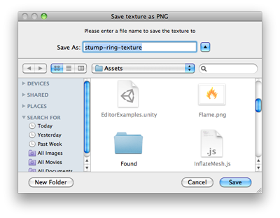

EditorUtility.SaveFilePanelInProject
public static string SaveFilePanelInProject(string title,
string defaultName,
string extension,
string message);
Description 描述
Displays the "save file" dialog in the Assets folder of the project and returns the selected path name.
See Also: SaveFilePanel function.

Save File panel in project.
using UnityEngine; using UnityEditor; using System.IO;
public class SaveFilePanelInProjectExample : EditorWindow { [MenuItem("Example/Save Texture In Project")] static void Apply() { Texture2D texture = Selection.activeObject as Texture2D; if (texture == null) { EditorUtility.DisplayDialog("Select Texture", "You must select a texture first!", "OK"); return; }
string path = EditorUtility.SaveFilePanelInProject("Save png", texture.name + "png", "png", "Please enter a file name to save the texture to"); if (path.Length != 0) { byte[] pngData = texture.EncodeToPNG(); if (pngData != null) { File.WriteAllBytes(path, pngData);
// As we are saving to the asset folder, tell Unity to scan for modified or new assets AssetDatabase.Refresh(); } } } }